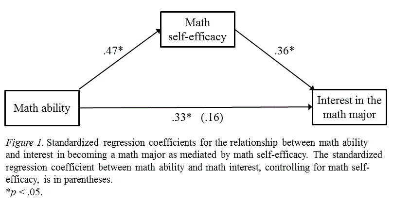
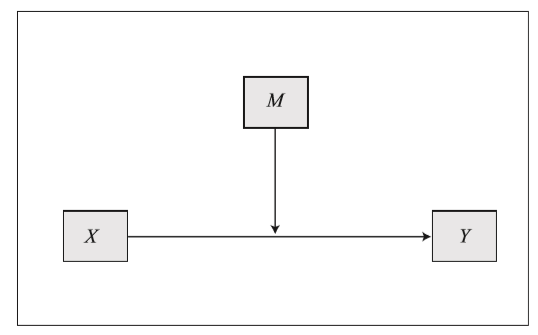
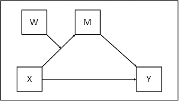
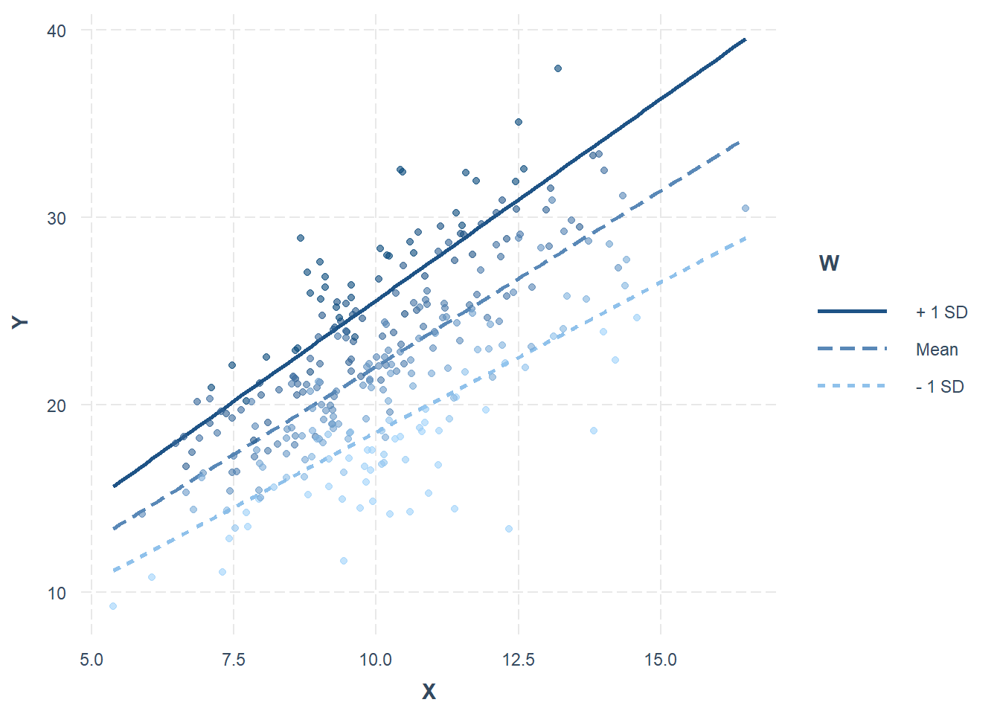

Hayes Process Model: An Introduction and Practical Application in R
Introduction to Hayes Process Models
The Hayes Process Models provide a powerful framework for analyzing complex relationships between variables in social, behavioral, and other scientific research fields. Developed by Andrew F. Hayes, this approach offers a set of statistical tools that allow researchers to explore and test relationships that go beyond simple linear correlations. These models focus on mediation, moderation, and conditional process modeling, offering a clear method for investigating how and when effects occur.
What is Mediation, Moderation, and Conditional Process Modeling?
Mediation

Mediation analysis helps identify why or how a certain effect occurs. It examines whether the relationship between an independent variable (X) and a dependent variable (Y) is explained, at least partially, by a third variable called the mediator (M). In simpler terms, mediation investigates if X affects Y through M, by decomposing the total effect of X on Y into direct and indirect effects.
Example: A researcher might hypothesize that the impact of study habits (X) on academic performance (Y) is mediated by motivation (M). The mediation model would test whether better study habits increase motivation, which in turn improves academic performance.
Moderation

Moderation analysis looks at when or under what conditions a relationship between X and Y holds. It introduces a moderator variable (W), which influences the strength or direction of the effect that X has on Y. The goal is to determine if the effect of X on Y changes depending on the level of W.
Example: A company might test whether the relationship between employee training (X) and job performance (Y) depends on the years of experience (W) the employees have. If training improves job performance more for experienced workers than for beginners, experience moderates the training-performance relationship.
Conditional Process Modeling

Conditional process modeling combines mediation and moderation, exploring both how and when an effect occurs. It investigates whether the indirect effect of X on Y through M is conditional upon the level of a moderator W, allowing researchers to examine more nuanced relationships.
Example: A researcher could examine whether the indirect effect of parental involvement (X) on a child’s academic success (Y) through school engagement (M) depends on the socio-economic status (W) of the family. In this case, socio-economic status moderates the indirect effect of parental involvement on academic success.
The Importance of Hayes Process Models
Hayes’ models have become increasingly popular because they provide a comprehensive and structured way to test hypotheses involving complex variable relationships. They allow researchers to:
Analyze causal mechanisms and understand the process through which an independent variable influences an outcome.
Determine under what conditions an effect holds, identifying critical contextual or situational factors.
Move beyond traditional statistical approaches, which often assume linear, direct relationships, by modeling indirect, conditional, or interactive effects.
The statistical foundation for these models is rooted in ordinary least squares (OLS) regression and bootstrapping methods, which allow for robust hypothesis testing even when assumptions such as normality are violated. Hayes’ popular PROCESS macro, which integrates into software like SPSS, SAS, and R, simplifies the estimation of mediation and moderation models, making it accessible for researchers with varying levels of statistical expertise.
Types of Hayes Models
Hayes developed over 90 distinct models for mediation, moderation, and moderated mediation. Each model is designed for different types of hypotheses:
Model 4 is widely used for simple mediation.
Model 1 tests for simple moderation.
Model 7 is a common choice for moderated mediation (also known as conditional process models).
These models provide flexible and easily interpretable ways to test intricate theoretical relationships.
Mediation analysis is a statistical technique used to explore the underlying process or mechanism through which an independent variable (X) influences a dependent variable (Y) through a third variable, called the mediator (M). This chapter will provide an in-depth look at the theory behind mediation, introduce you to the necessary statistical steps, and show how to conduct mediation analysis using R with practical examples.
Conceptual Background of Mediation
In many research scenarios, a simple direct relationship between an independent variable and a dependent variable does not fully explain the phenomenon being studied. Mediation analysis is useful when we suspect that this relationship is at least partly driven by an intermediate variable, called the mediator. The goal is to assess both the direct effect of X on Y and the indirect effect, which is the portion of the effect that passes through M.
Path Diagram for Mediation
A typical mediation model is illustrated with three paths:
Path a: The effect of the independent variable (X) on the mediator (M).
Path b: The effect of the mediator (M) on the dependent variable (Y), while controlling for X.
Path c’: The direct effect of X on Y, while controlling for the mediator (M).
Indirect effect: The product of paths a and b, representing the portion of the effect of X on Y that occurs through M.
Mediation Formula
The relationship between the variables is expressed using the following equations:
\[
M = aX + e_1
\]\[
Y= bM + c'X + e_2
\]
Where:
a is the regression coefficient for the effect of X on M.
b is the regression coefficient for the effect of M on Y (controlling for X).
c’ is the direct effect of X on Y after accounting for the mediator.
Total Effect
The total effect of X on Y is the sum of:
The direct effect of X on Y (c’).
The indirect effect, which is mediated through M.
Mathematically:
\[
c=c'+(a \cdot b)
\]
Where:
c: Total effect of X on Y.
c’: Direct effect of X on Y (not through M ).
\(a \cdot b\): Indirect effect of X on Y via M.
Steps in Mediation Analysis
Mediation analysis generally follows three main steps:
Testing the effect of X on M (path a):
This step assesses whether X significantly predicts the mediator (M). If X does not affect M, there is no mediation.
Testing the effect of M on Y while controlling for X (path b):
This step tests whether M affects Y when controlling for X. A significant relationship between M and Y indicates that M is a mediator.
Testing the direct effect of X on Y (path c’):
The total effect of X on Y (before including M) is divided into two parts: the direct effect (c’) and the indirect effect (ab). If the direct effect c’ is significantly reduced when M is included, this supports the presence of mediation.
하지만 Hayes나 현대적 Mediation에서는 조금 뉘앙스가 다름
과거 Baron & Kenny (1986) 접근에서는 path a, b, c’가 모두 유의해야 mediation이라고 결론냈지만, 현대적 접근(특히 Hayes PROCESS)에서는 경로 각각의 유의성보다 indirect effect = a × b 자체가 유의한지가 더 중요함.
indirect effect는 부트스트랩으로 검정
H₀: a×b = 0
H₁: a×b ≠ 0
부트스트랩이 가정을 완화하는 메커니즘
1) 데이터를 직접 재표집(resampling)하여 분포를 “경험적으로” 만듦
전통적 검정은 “이 통계량은 정규분포일 것이다”라는 이론적 분포 가정을 사용.
부트스트랩은 정규성 가정을 사용하지 않고, 원데이터에서 재표집된 분포를 그대로 사용.
비정규성(non-normality) 문제를 해결
2) 간접효과 ab 같은 복잡한 통계량도 분포를 직접 구성
a × b의 분포는 정규가 아니고 skewed 형태.
하지만 부트스트랩은 원표본을 재표집하여 a와 b를 계속 추정
매 반복마다 a × b 값을 쌓아 실제 분포를 재구성
자연스럽게 간접효과의 실제 경험적 분포를 얻고, 그 위에서 신뢰구간(CI)이나 유의성 판단
3) 표본이 적거나 잔차가 이분산일 때도 안정적인 추론 가능
부트스트랩은 데이터의 특성을 있는 그대로 반영하기 때문에
차가 정규적이지 않아도, 이상치가 있어도, 이분산성이 있어도, 표본이 작아도 → 표본 분포를 직접 재구성하므로 “견고한(robust)” 추론이 가능
PROCESS는 어떻게 작동하나?
기본 모델은 OLS 회귀식 (매개: X→M, M→Y / 조절: 상호작용항 등)
하지만 추론, 특히 간접효과 검정은 Bootstrapped confidence interval (BCa CI) 사용
그래서 PROCESS는 다음 가정을 완화:
정규성 가정 완화
간접효과 분포의 정상성 가정 제거
표본크기의 민감도 완화
Bootstrapping for Mediation
Since the product of coefficients (a * b) often has a non-normal distribution, bootstrapping is commonly used to obtain more accurate confidence intervals for the indirect effect. Bootstrapping repeatedly samples the data with replacement to estimate the distribution of the indirect effect, which allows for more robust statistical inferences.
Example: Simple Mediation Using Hayes’ Model 4 in R
To illustrate mediation analysis, we will use Hayes’ Model 4—a simple mediation model. Below is an example of how to run a mediation analysis in R using a fictional dataset where the independent variable (X) is hours studied, the mediator (M) is motivation, and the dependent variable (Y) is test score.
Data Simulation Example
# Simulating the datasetset.seed(123)n <-200X <-rnorm(n, mean =10, sd =2) # Hours studiedM <-0.5* X +rnorm(n) # Motivation (mediator)Y <-0.6* M +0.3* X +rnorm(n) # Test score (dependent variable)data <-data.frame(X = X, M = M, Y = Y)head(data)
X M Y
1 8.879049 6.638335 6.573159
2 9.539645 6.082235 5.342583
3 13.117417 6.293563 7.076615
4 10.141017 5.613702 6.381685
5 10.258575 4.714948 6.577237
6 13.430130 6.238818 6.121783
Running Mediation Analysis in R
We will use the mediation package in R, which provides functions for conducting mediation analysis. First, we fit two linear models: one for predicting the mediator (M) and one for predicting the outcome (Y).
# Load the mediation package# install.packages("mediation")library(mediation)
# Step 1: Fit the model for the mediatormed_model <-lm(M ~ X, data = data)# Step 2: Fit the model for the outcomeout_model <-lm(Y ~ M + X, data = data)# Step 3: Conduct mediation analysismediation_analysis <-mediate(med_model, out_model, treat ="X", mediator ="M", boot =TRUE, sims =500)
The output of the mediate() function provides several key statistics:
ACME (Average Causal Mediation Effect): This is the estimated indirect effect (a * b). If it is significantly different from zero, we can conclude that mediation exists.
ADE (Average Direct Effect): This represents the direct effect (c’) of X on Y, after accounting for the mediator.
Total Effect: The sum of the direct and indirect effects.
Proportion Mediated: The proportion of the total effect that is mediated by M.
An example interpretation might be:
The indirect effect of hours studied on test scores through motivation is significant, meaning motivation partially mediates the relationship between hours studied and test scores.
The direct effect of hours studied on test scores remains significant even after accounting for motivation, indicating that both direct and mediated effects are important.
Limitations of Mediation Analysis
While mediation analysis is powerful, it is not without its limitations:
Causality: Mediation assumes a causal order (X → M → Y), but establishing causality requires more than just statistical analysis (e.g., experimental designs or longitudinal data).
Confounding Variables: Unaccounted confounders can bias the results. It’s important to ensure that potential confounders are controlled for in the analysis.
Measurement Error: Inaccurate measurement of X, M, or Y can distort the mediation effect.
Moderation Analysis
Moderation analysis is a statistical technique used to explore how the relationship between an independent variable (X) and a dependent variable (Y) changes depending on the level of a third variable, known as the moderator (W). This technique allows researchers to examine when and under what conditions an effect occurs, rather than simply whether or not it exists.
Conceptual Background of Moderation
In many research contexts, the relationship between an independent variable (X) and a dependent variable (Y) is not consistent across all situations or individuals. Instead, this relationship may depend on a third variable, called the moderator (W). Moderation occurs when the effect of X on Y varies depending on the level of W.
Moderation analysis answers the question: “When or under what conditions does X influence Y?” For example, the relationship between study time (X) and test performance (Y) may depend on the student’s motivation (W). If motivation is high, the effect of study time on test performance might be stronger than when motivation is low.
Moderation occurs when the strength or direction of the relationship between two variables (X and Y) is influenced by a third variable (W). Rather than explaining how the effect happens (as in mediation), moderation analysis addresses the question of when or under what conditions an effect is stronger, weaker, or even reversed.
A moderator can be either:
Quantitative (e.g., income, age, temperature) or
Categorical (e.g., gender, region, treatment vs. control).
Example of Moderation
Imagine we are investigating whether the relationship between study hours (X) and test scores (Y) is moderated by sleep quality (W). It is possible that the effect of studying on test scores is stronger when sleep quality is high and weaker when sleep quality is low. This would suggest that sleep quality moderates the relationship between study hours and test scores.
Moderation Formula
The general form of a moderation model can be expressed as:
\[
Y = b_0 + b_1X + b_2W + b_3(X \times W)+e
\]
Where:
X is the independent variable,
W is the moderator,
XW is the interaction term between X and W, representing the moderation effect,
b1 represents the effect of X on Y (when W = 0),
b2 represents the effect of W on Y (when X = 0),
b3 represents the effect of the interaction between X and W on Y, quantifying how W moderates the effect of X on Y.
In this model, the key coefficient of interest is b3, which tests whether the interaction between X and W significantly predicts Y. A significant interaction effect (b_3 ≠ 0) indicates the presence of moderation.
Decomposing Effects
The interaction term captures how the effect of X on Y depends on W. Specifically:
\[
\text{Effect of X on Y} = \beta_1 + \beta_3 W
\]
When W increases, the slope of (X on Y) changes by \(\beta_3\).
Conditional Effects
The relationship between X and Y is conditional on the value of W
If \(W=0\): The effect of X on Y is simply \(\beta_1\)
If \(W>0\): The effect of X on Y becomes \(\beta_1+\beta_3W\)
This demonstrates that the magnitude and direction of X’s effect on Y change depending on W.
Path Diagram for Moderation
A typical moderation model can be depicted as follows:
X → Y: The main effect of the independent variable (X) on the dependent variable (Y).
W (Moderator): The moderator affects the strength or direction of the X → Y relationship.
Interaction Effect (X * W): This term captures the effect of the interaction between X and W on Y. If the interaction term is significant, it indicates that W moderates the relationship between X and Y.
Example: Simple Moderation Using Hayes’ Model 1 in R
To illustrate moderation analysis, we will use Hayes’ Model 1, which tests for a simple moderation effect. In this example, we will examine whether motivation (W) moderates the relationship between hours studied (X) and test score (Y).
Data Simulation Example
# Simulating the datasetset.seed(123)n <-300X <-rnorm(n, mean =10, sd =2) # Hours studied (X)W <-rnorm(n, mean =5, sd =1) # Motivation (Moderator, W)Y <-0.4* X +0.6* W +0.3* X * W +rnorm(n) # Test score (Y)data <-data.frame(X = X, W = W, Y = Y)head(data)
X W Y
1 8.879049 4.284758 18.60986
2 9.539645 4.247311 18.49225
3 13.117417 4.061461 23.63328
4 10.141017 3.947487 16.91829
5 10.258575 4.562840 21.67399
6 13.430130 5.331179 29.83955
Running Moderation Analysis in R
We can use the lm() function to fit the moderation model, including the interaction term between X and W.
# Step 1: Fit the main effects modelmain_effects_model <-lm(Y ~ X + W, data = data)summary(main_effects_model)
Call:
lm(formula = Y ~ X + W, data = data)
Residuals:
Min 1Q Median 3Q Max
-2.8798 -0.7630 0.0867 0.6989 4.1000
Coefficients:
Estimate Std. Error t value Pr(>|t|)
(Intercept) -14.44599 0.50512 -28.60 <2e-16 ***
X 1.84417 0.03499 52.71 <2e-16 ***
W 3.59820 0.06692 53.77 <2e-16 ***
---
Signif. codes: 0 '***' 0.001 '**' 0.01 '*' 0.05 '.' 0.1 ' ' 1
Residual standard error: 1.142 on 297 degrees of freedom
Multiple R-squared: 0.9474, Adjusted R-squared: 0.947
F-statistic: 2673 on 2 and 297 DF, p-value: < 2.2e-16
# Step 2: Fit the moderation model (including the interaction term)moderation_model <-lm(Y ~ X * W, data = data)summary(moderation_model)
Call:
lm(formula = Y ~ X * W, data = data)
Residuals:
Min 1Q Median 3Q Max
-2.52213 -0.72725 0.04238 0.68765 2.63550
Coefficients:
Estimate Std. Error t value Pr(>|t|)
(Intercept) -0.61640 1.77458 -0.347 0.72857
X 0.48400 0.17158 2.821 0.00511 **
W 0.78321 0.35421 2.211 0.02779 *
X:W 0.27753 0.03441 8.067 1.82e-14 ***
---
Signif. codes: 0 '***' 0.001 '**' 0.01 '*' 0.05 '.' 0.1 ' ' 1
Residual standard error: 1.036 on 296 degrees of freedom
Multiple R-squared: 0.9568, Adjusted R-squared: 0.9564
F-statistic: 2188 on 3 and 296 DF, p-value: < 2.2e-16
Interpreting the Results
In the output of the lm() function, focus on the coefficient for the interaction term (X). If this term is significant, it means that motivation (W) moderates the relationship between hours studied (X) and test score (Y).
Main effects: The coefficients for X and W tell us the effect of hours studied and motivation on test scores when the other variable is held constant.
Interaction effect: A significant interaction term indicates that the relationship between hours studied and test scores changes depending on the level of motivation.
For example:
If the interaction term is positive, the effect of study hours on test scores is stronger when motivation is higher.
If the interaction term is negative, the effect of study hours on test scores is weaker when motivation is higher.
Visualizing the Interaction Effect
To better understand the moderation effect, it’s helpful to plot the interaction between X and W. The interactions package in R provides convenient functions for visualizing interaction effects.
# Load the interactions package# install.packages("interactions")library(interactions)# Plot the interaction effectinteract_plot(moderation_model, pred ="X", modx ="W", plot.points =TRUE)

This plot shows how the relationship between hours studied and test scores varies depending on the level of motivation. For example, you might see that at low levels of motivation, hours studied have little effect on test scores, but at high levels of motivation, hours studied have a strong positive effect on test scores.
Interpreting the Results of Moderation Analysis
Moderation analysis results need to be interpreted carefully to understand the underlying relationships. The significance of the interaction term helps determine whether moderation exists, and the direction of the interaction coefficient provides insight into how the moderator influences the relationship between X and Y.
Significant Interaction: If the interaction term is significant, W moderates the relationship between X and Y. The interaction plot provides a visual representation of this effect.
Non-Significant Interaction: If the interaction term is not significant, this suggests that the relationship between X and Y is consistent across levels of W, meaning no moderation effect exists.
Significant Interaction but Only One Main Effect is Significant: The significant interaction indicates that the effect of X on Y depends on W, even if X or W alone does not have a straightforward effect on Y.
Example,
Predictor (X): Study habits.
Moderator (W): Sleep quality.
Outcome (Y): Academic performance.
If the main effect of W (sleep quality) is significant, but the main effect of X (study habits) is not, and the interaction (X×W) is significant:
Interpretation: Study habits do not independently predict academic performance, but their effect is moderated by sleep quality. For example:
When sleep quality is high, study habits have a stronger positive impact on academic performance.
When sleep quality is low, the relationship between study habits and academic performance might weaken or even reverse.
Significant interaction, no main effects significant: The effect of X on Y exists only through interaction with W.
Simple Slopes Analysis
To further interpret a significant moderation effect, a simple slopes analysis is often conducted. This involves examining the relationship between X and Y at different levels of the moderator (e.g., low, medium, and high levels of W).
The simple slopes analysis can provide insights into:
How the relationship between X and Y changes across levels of W.
Whether the effect of X on Y is significant at different levels of W.
Moderated Mediation (Conditional Process)
Moderated mediation, also known as conditional process modeling, refers to the integration of both mediation and moderation in a single model. In a moderated mediation model, the indirect effect of an independent variable (X) on a dependent variable (Y) through a mediator (M) is contingent upon the level of a moderator (W). Let me explain the theoretical framework for moderated mediation, guide you through the steps for conducting such an analysis, and demonstrate how to perform this type of analysis in R using Hayes’ Model 7.
Conceptual Background of Moderated Mediation
Moderated mediation explores both how and when an effect occurs. Specifically, it investigates whether the strength or direction of the indirect effect of X on Y through M depends on a moderator variable (W). This allows researchers to examine whether the mediation process varies across different conditions or groups.
Key Questions Answered by Moderated Mediation:
How does the mediation process work?: Does X affect Y through a mediator M?
When or under what conditions is the mediation stronger or weaker?: Does the indirect effect of X on Y through M vary based on the level of a moderator W?
Moderated mediation is particularly useful when a simple mediation model is not enough to capture the complexity of the relationships among variables. It allows researchers to test whether the mediation pathway is stronger or weaker under certain conditions.
Path Diagram for Moderated Mediation
A typical moderated mediation model can be represented as:
X → M → Y: This is the basic mediation pathway, where X affects Y indirectly through M.
W moderating X → M or W moderating M → Y: The moderator W influences either the path from X to M (i.e., the indirect effect itself) or the path from M to Y.
Thus, W can moderate the relationship between X and M, M and Y, or both.
Moderated Mediation Formula
The statistical model for moderated mediation can be expressed as follows:
For the mediator (M):
\[
M = a_1X + a_2W + a_3(X \times W) + e_1
\]
For the dependent variable (Y):
\[
Y = b_1M + b_2X + e_2
\]
Where:
a₁: The effect of X on M.
a₃: The interaction between X and W, indicating whether W moderates the relationship between X and M.
b₁: The effect of M on Y (mediated effect).
Direct Effect
The direct effect of X on Y is independent of mediation: \(\beta_2\)
Indirect Effect
The indirect effect is conditional on the level of W, meaning that the mediation pathway (X → M → Y) changes depending on the moderator.
\[
\text{Indirect Effect}=(a_1+a_3W) \cdot b_1
\]
Where:
\(a_1\): Effect of X on M (baseline effect).
\(a_3\): Moderation of the X → M path by W.
\(b_1\): Effect of M on Y.
Example: Moderated Mediation Using Hayes’ Model 7 in R
Let’s work through an example of moderated mediation using Hayes’ Model 7, where we examine whether the indirect effect of hours studied (X) on test score (Y) through motivation (M) is moderated by interest in the subject (W).
Data Simulation Example
# Simulating the datasetset.seed(123)n <-200X <-rnorm(n, mean =10, sd =2) # Hours studied (X)W <-rnorm(n, mean =5, sd =1) # Interest in subject (Moderator, W)M <-0.5* X +0.3* W +0.2* X * W +rnorm(n) # Motivation (Mediating variable)Y <-0.6* M +0.3* X +rnorm(n) # Test score (Dependent variable)data <-data.frame(X = X, W = W, M = M, Y = Y)head(data, 10)
We will use the moderndive package to estimate the moderated mediation model in R. In this example, the mediator is motivation, and the moderator is interest in the subject.
# 필요한 패키지 설치 및 로드library(mediation)# Step 1: Fit the model for the mediator (X → M)med_model <-lm(M ~ X * W, data = data)# Step 2: Fit the model for the outcome (Y ~ M + X * W)out_model <-lm(Y ~ M + X, data = data)# Step 3: Conduct the moderated mediation analysismod_med_analysis <-mediate(med_model, out_model, treat ="X", mediator ="M", boot =TRUE, sims =500)